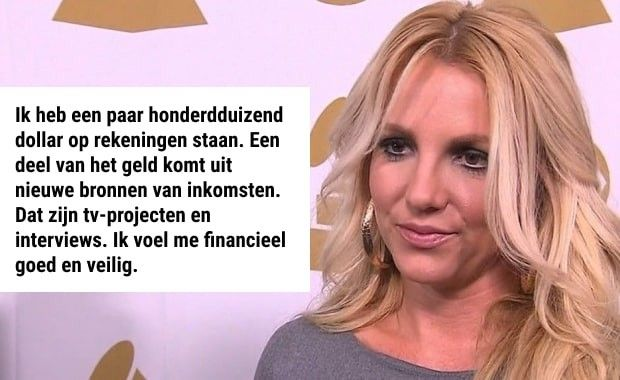
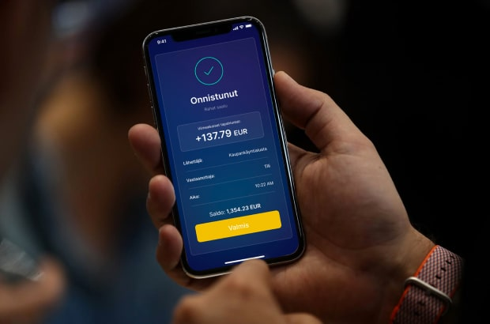
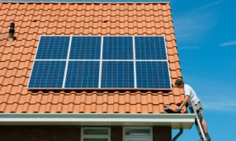

BELANGRIJK
Geld > Nieuws Geld
WE GELOVEN HET NIET: Britney Spears is weer stinkend rijk!
Achterhaal hoe zij haar geld 15-20 keer vermenigvuldigde met een nieuwe GEHEIME bron van digitale investeringen [NU voor iedereen beschikbaar]!
Guust Schoterman
28 Mar 2022 , 10:25 | Bijgewerkt: 11:45, 28 Mar 2022
De legendarische Britney Spears probeerde haar recente financiële successen te verbergen. Maar de informatie over haar GEHEIME investeringen werd openbaar gemaakt dankzij onze journalisten! Lees verder om te weten hoe je een nieuw huis kunt kopen voor jou en je gezin in slechts een paar maanden met een initiële investering van amper 250 euro. >>>
Britney Spears was en blijft een wereldpopicoon van de eenentwintigste eeuw, ondanks een lawine van moeilijkheden in haar persoonlijke leven. Ze verdiende veel geld met haar muziek, maar het despotisme van haar biologische vader beperkte haar toegang tot inkomsten. Onlangs slaagde de zangeres erin zich te ontdoen van de voogdij, maar ze werd geconfronteerd met nieuwe uitdagingen. Het is een feit dat de rechten op het inkomen volgens de wettelijke procedures over een paar jaar naar haar zullen terugkeren. Hoe bouw je vandaag een leven op uit het niets?

Britney's vader hield haar aan het lijntje, maar gaf haar niets. Ze was niet betrokken bij financiële zaken.
Ondanks de huidige situatie is Britney de laatste tijd regelmatig opgevallen vanwege haar kolossale uitgaven. Haar huidige inkomen staat een dergelijke levensstijl niet toe, en het grootste deel van haar muziekgeld zal pas over twee jaar beschikbaar zijn.
Hier is wat Britney zelf zei over haar inkomen een paar jaar in een van de laatste interviews:

Ms. Spears heeft meer dan genoeg geld om een nieuw leven te beginnen. Echter, de recente geheime uitgaven zouden haar financiële reserves in een mum van tijd hebben uitgeput. Er zat iets achter haar gedrag dat tegen de officiële informatie inging.
Dus waar haalt ze het geld vandaan om weer een uitbundige spender lifestyle te leiden?
We weten wel dat Britney Spears per ongeluk werd gespot met een peperdure ketting.
Ze kreeg onlangs een nieuw duur herenhuis, dat minstens 5 miljoen dollar kost.
Er zijn bevestigingen van een geheime paardenranch met meer dan 20 dure volbloedpaarden.
Ze huurt regelmatig een privéjet voor persoonlijke vluchten.

Britney Spears geniet van een zeer luxueus leven zonder publiciteit.
Tijdens een journalistiek collega-onderzoek namen collega's contact op met de PR-vertegenwoordiger van de beroemdheid, maar vragen over geheime rijkdom werden genegeerd. Echter, kort daarna werden we onofficieel gecontacteerd door een persoon uit Britney Spears' entourage die bereid was om de WAARHEID aan alle mensen te vertellen.
Hij BEVESTIGDE de nieuwe rijkdom van de beroemde zangeres en leverde het bewijs van een nieuw geheim platform voor het investeren in de meest winstgevende Altcoins.

Een insider uit Britney Spears' entourage
Ik heb veel respect voor Britney, maar ik denk ook dat het belangrijk is om informatie over deze bron van inkomen met iedereen te delen, omdat het een echte manier is om je te beschermen tegen de risico's van armoede in deze moeilijke tijden.
Haar financieel adviseur heeft een sterke invloed op haar en verbiedt hem te praten over een nieuw beleggingsinstrument voor deze automatische inkomsten. Britney doet niets. Zijn geld wordt belegd en genereert een enorm passief inkomen. Zelfs ik probeerde te beleggen en verdiende enkele tienduizenden dollars in amper drie maanden.
Iedereen kan gaan werken en een nieuw huis kopen. Zelfs een kind kan verstaan hoe het werkt, veel geld verdienen, en dingen kopen... Je weet wel, al het speelgoed in de wereld! Het werkt, het is een echte panacee voor de geldproblemen van vandaag!
Laten we eerlijk zijn... Het bleek veel ongeloofwaardiger te zijn dan we dachten, en we weten niet zeker of we dit materiaal mogen publiceren. De grote banken en regeringen zullen die wel willen verstoppen voor de burgers. Ongelooflijk, hoe makkelijk en legaal het is om zelfvoorzienend miljonair te worden! Wij raden je dus aan het artikel nu te lezen voordat wij gedwongen worden het te verwijderen!
Hier is het bewijs dat onze collega's ontvingen: een bron vertelde ons dat dit de inkomensverklaring van Britney Spears van vorige maand was.
Britney Spears' inkomensverklaring van een van de persoonlijke rekeningen bij The Central Bank of The Bahamas
Alles wat Britney zei over inkomsten is waar. Maar haar voornaamste bron van inkomsten is de laatste tijd iets dat Altcoin PRO Wealth heet.
Opmerking van de redactie: WAT IS ALTCOIN
De term "altcoin" is een afkorting voor "alternatieve munten" en betekent andere cryptocurrencies dan Bitcoin. Ze delen kenmerken met Bitcoin, maar zijn ook op andere manieren anders. Altcoins zijn nieuwere Bitcoin-versies die vrij zijn van hun tekortkomingen, maar vooralsnog iets minder populair zijn. Er zijn meer dan 14.000 cryptocurrencies, waaronder de populairste en grootste naar market cap zijn Ethereum ($368 miljard), Tether ($78 miljard), Binance Coin ($70 miljard), Cardano ($39 miljard), en Solana ($38 miljard).
Vervolgens kwamen we meer te weten over de Altcoin PRO Wealth zelf. Informatie over dit platform is gemakkelijk te vinden, kijk maar op de website. Dit project wordt echter niet breed geadverteerd, en Britney Spears' financieel adviseur verbood zijn cliënt om het project überhaupt bekend te maken.
We vroegen Crypto expert om het probleem duidelijk te maken.
Aart Reuvers, Gecertificeerd Crypto Investeringsdeskundige
Altcoin PRO Wealth is het nieuwe woord in het investeren in digitale activa! Dit is een groot nieuw ding dat de wereld zal veranderen. Zelfs ik weet alles over de Ethereum en andere altcoins, maar dit is de eerste keer dat ik zo'n oplossing heb gezien. Er waren alleen geruchten over in onze gemeenschap de afgelopen paar maanden, maar niemand geloofde echt dat het mogelijk was.
Kijk, ik zal het uitleggen met mijn eigen voorbeeld. Ik ben een traditionele belegger in cryptocurrenices. Mijn taak is om voortdurend de markt in de gaten te houden, veelbelovende cryptocurrenices te identificeren, ze goedkoper te kopen en ze hoger te verkopen. Mijn inkomen hangt af van mijn expertise en kennis.
Tools zoals Altcoin PRO Wealth zijn een game changer! Altcoin PRO Wealth is een platform voor automatische investeringen in verschillende winstgevende cryptocurrencies. IEDEREEN met toegang tot internet kan zich registreren op het platform en een eerste inleg investeren. In dit geval is de prijs 250 €+. Daarna wordt het geld automatisch omgewisseld in cryptocurrency om de real-time stroom van transacties te vereenvoudigen. Dus, eigenlijk koop je crypto met Altcoin PRO Wealth, dan krijg je crypto-inkomsten, en dan draait het platform het om naar je geld terug. Het systeem werkt zonder tussenkomst van de gebruiker.
Altcoin PRO Wealth is een nieuwe generatie artificial intelligence robot die zelf de markt analyseert en succesvolle investeringen doet met hoge nauwkeurigheid. Het brengt superwinsten naar zijn gebruikers.
Er is geen wettelijke basis om dergelijke systemen te verbieden, maar geen wonder dat we niets weten over dergelijke platforms. Grote banken en overheden zijn bang om alle mensen rijk te laten worden van deze megawinsten. Ze houden deze informatie voor iedereen verborgen!
The good thing is that this secret will now be made public, and everyone will be able to invest in profitable cryptocurrencies, earning themselves a luxurious life today and a comfortable old age tomorrow.
Meer over Altcoins
COINING IT Wat zijn Altcoins en hoe werken ze?

CRYPTO CONUNDRUM Mijn vrouw wil onze $100k aan cryptocurrency verkopen om een huis te kopen voordat de rente stijgt, maar ik wil het nog niet verkopen
Je vroeg mij gisteren om een toelichting, en ik heb het systeem al getest.
Gistermiddag deed ik de minimale storting van 250 euro volgens de drie-stappen-instructies op de website. Het systeem liet me weten dat de robot begon te werken. Ik controleerde de rekeningupdates na 30 minuten en zag dat de rekening al inkomsten- en uitgaventransacties had. Op twee kleine investeringen verloor de robot in totaal ongeveer 70 euro, maar het was vooral winst. Uiteindelijk ging mijn rekening op dat moment van 250 naar 315 euro.
Om eerlijk te zijn, verwachtte ik op dat moment niets. Toen ik 's avonds mijn account controleerde, stond er al meer dan 600 euro winst op! Het lijkt erop dat de robot efficiënter begon te werken en meer inkomsten op de rekening bracht. Ik herinvesteerde alles weer op de rekening.
Vanmorgen had ik al meer dan 1 350 euro op mijn account! Ik had meer dan ik had verwacht!

Ik ben nog nooit zulke hoog renderende beleggingsmogelijkheden tegengekomen, die resultaten opleveren zonder enige ervaring nodig te hebben. Ik ben van plan om verder te testen, inkomsten te herinvesteren, en volgens mijn berekeningen denk ik dat ik in een maand 20 000 euro zal verdienen aan dit tempo.
Dit is een echte bron van inkomsten. Iedereen kan hetzelfde resultaat behalen.
Als expert in digitale financiën raad ik echter iedereen ten zeerste aan:
investeer NU in Altcoin PRO Wealth vanaf 250 euro. Dit is BELANGRIJK als je verwacht een gegarandeerde winst te maken.
Ten eerste is het onduidelijk hoe banken en overheden zullen reageren op dit lek met een poging om het te dichten. Dus, krijg de maximale inkomsten terwijl het nog kan.
Ten tweede, er zijn zeker technische beperkingen van het systeem. Niet iedereen zal zich kunnen registreren. Ik heb al gesproken met hun manager, hij bevestigde dit feit. Maar op dit moment is het platform nog steeds open voor iedereen, en 10-20 mensen kunnen zich zeker nog registreren.
Doe zoals ik: profiteer van dit prachtige informatielek nu je DE KANS HEBT! Word gelukkig en rijk met Altcoin beleggingen!
Mathijs Crull, Hoofdredacteur Financieel Nieuws
Ik garandeer met volle verantwoordelijkheid dat het werkt. We staan achter Aart's woorden, dit is geverifieerde informatie-we geven om onze lezers. Onze [financieel nieuws team] totale inkomsten waren meer dan 5 000 euro. op de eerste dag. Vervolgens hebben we eenvoudige instructies ontwikkeld om jou te helpen je snel in te schrijven. Haast je, want de plaatsen zijn echt beperkt tot een paar actieve slots!
Schrijf je nu in
BEGIN NU MET GELD VERDIENEN!
REGISTRATIE
Registreer in het systeem
Geef uw voor- en achternaam, e-mailadres, gekozen beveiligingswachtwoord en telefoonnummer. Na bevestiging van de ingevoerde gegevens, wordt u een volwaardig lid van het systeem.
Voer uw e-mailadres in om VIP-toegang tot het systeem te krijgen
Voer uw mobiele telefoonnummer in om uw identiteit te verifiëren
EEN STORTING DOEN
Doe een eerste storting op uw rekening
Doe een eerste storting (250 EUR) op uw rekening voordat u het platform gaat gebruiken. Volg de instructies op het scherm om te voltooien.
Om uw account te activeren en te beginnen met verdienen, moet u een bedrag investeren niet minder dan de minimale storting
WELKOM OP HET PLATFORM
Beantwoord de oproep om te beginnen met het krijgen van het passief inkomen elke dag
Na de registratie, wacht een paar minuten en beantwoord de inkomende oproep van onze manager. U zult antwoorden krijgen op al uw vragen en te weten komen hoe u gemakkelijk geld kunt verdienen op het platform.
Stort 250 EUR of meer om de meest winstgevende geldkans van je hele leven te krijgen:
Klik om te beginnen
Onderwerpen
Altcoin Crypto Lek
Misschien vindt je dit ook leuk

Zonnig geld
Hoeveel zonnepanelen kosten - en hoe ze je HONDERDEN EUROS kunnen besparen op je energierekeningen

Ga voor Crypto
Wat zijn digitale munten van centrale banken?

Gemaakt van geld
Plannen voor luxe 'crypto paradijs' eiland waar de superrijken in 2023 kunnen wonen
Top Tarieven
Hoe je geld kunt besparen als je het naar het buitenland stuurt